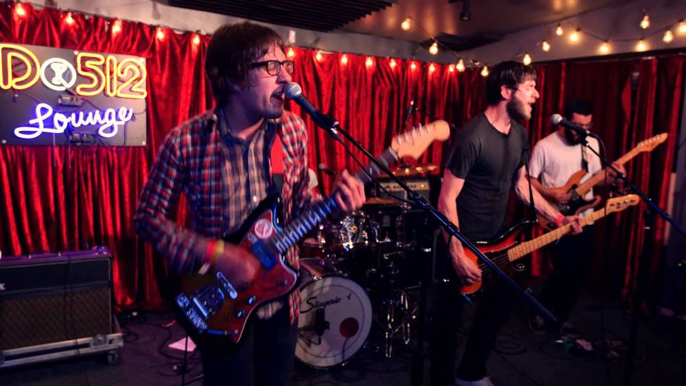

Power pop-punk outfit Rozwell Kid began in 2011 as the solo project of West Virginia native Jordan Hudkins. While drumming for fellow West Virginians the Demon Beat, Hudkins began assembling his own album based on his love of '90s punk and post-grunge indie. Signing with Broken World Media to release his debut, The Rozwell Kid LP, Hudkins assembled a full-band lineup that included guitarist Adam L. Meisterhans, bassist Devin Donnelly, and drummer Sean Hallock. With a sound resembling the tuneful fuzz pop of early Weezer, the band proceeded to deliver two more albums for the label in 2013's Unmacho and 2014's Too Shabby, each one tighter than the last. Over subsequent tours, festival appearances, split singles, and EPs, Rozwell Kid's reputation grew, eventually bringing them to the attention of revered California indie SideOneDummy, who signed them in 2017. Precious Art, their debut for the label and fourth album overall, was released in June of that year.
Rozwell Kid is an American indie rock band formed in 2011 in West Virginia, United States. They released their first studio album on Broken World Media and their most recent album on SideOneDummy. Rozwell Kid began in 2011 with the release of an album titled The Rozwell Kid LP. In February 2013, Rozwell Kid released their second album titled Unmacho. In October 2013, Rozwell Kid released a split with Sleeping Bag titled Dreamboats. In November 2014, Rozwell Kid released their third LP titled Too Shabby, which featured guitar solos approved by Lee Hartney of The Smith Street Band. In March 2015, Rozwell Kid released an EP titled Good Graphics. On June 23, 2015, Rozwell Kid released a split with The World Is a Beautiful Place & I Am No Longer Afraid to Die titled Fourteen Minute Mile. In June 2017, Rozwell Kid released an album titled Precious Art, their first album on SideOneDummy. The album received positive reviews from numerous publications, with an average review score of 80 on Metacritic based on seven reviews. The album went on to reach the 13th position on the Billboard Heatseekers Albums chart, as well as 24th on the Vinyl Albums chart and 39th on the Independent Albums chart.